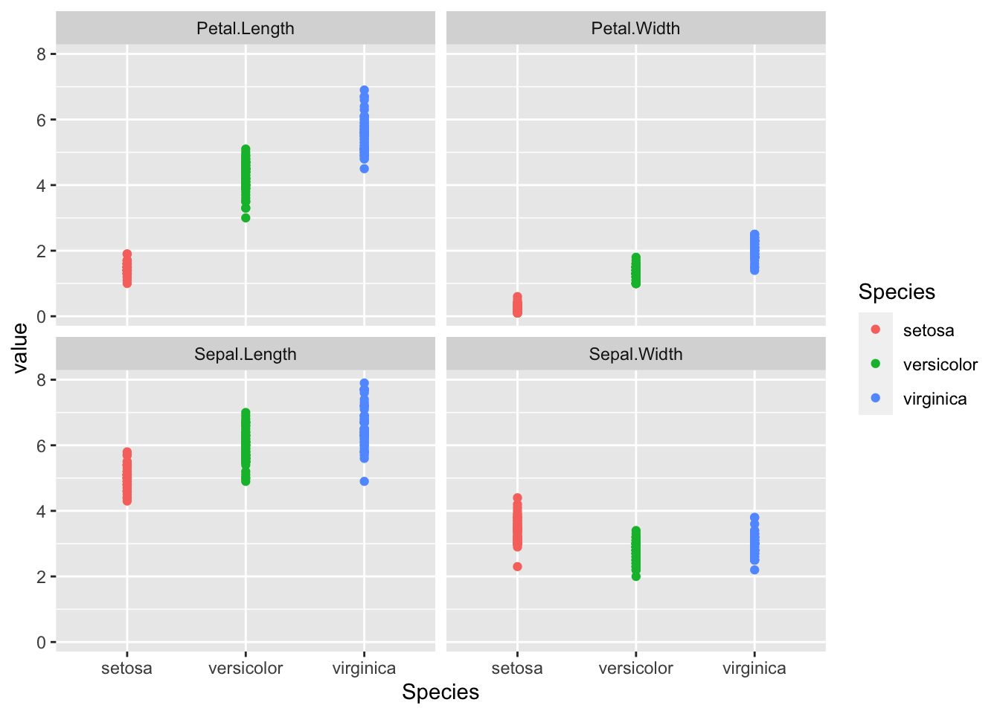
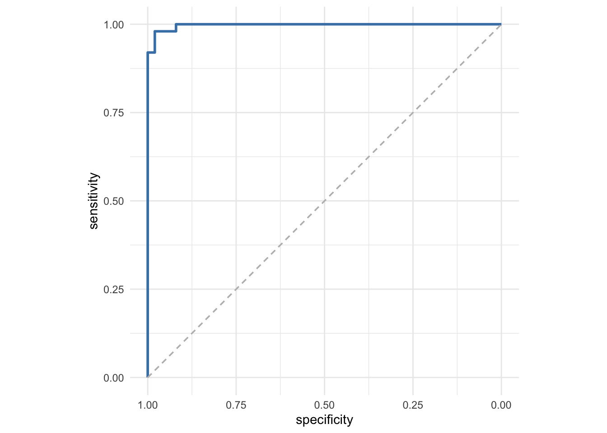

6 See one, do one, teach one! Machine Learning in R
6.1 Lernziele
- Verschiedene Machine Learning Algorithmen in R nutzen
- Daten in Training- und Testdaten unterteilen
- Trainierte Modelle auf neue Daten anwenden
- Klassifikationsgüte berechnen
6.2 Das Iris Dataset
In vielen Beipsielen wird online auf das sogenannte Iris Dataset Bezug genommen. Der Datensatz hat deshalb einige Berühmtheit erlangt, der Einfachheit halber verwenden wir ihn deshalb auch für dieses Webinar.
## 'data.frame': 150 obs. of 5 variables:
## $ Sepal.Length: num 5.1 4.9 4.7 4.6 5 5.4 4.6 5 4.4 4.9 ...
## $ Sepal.Width : num 3.5 3 3.2 3.1 3.6 3.9 3.4 3.4 2.9 3.1 ...
## $ Petal.Length: num 1.4 1.4 1.3 1.5 1.4 1.7 1.4 1.5 1.4 1.5 ...
## $ Petal.Width : num 0.2 0.2 0.2 0.2 0.2 0.4 0.3 0.2 0.2 0.1 ...
## $ Species : Factor w/ 3 levels "setosa","versicolor",..: 1 1 1 1 1 1 1 1 1 1 ...6.3 Explorative Datenvisualisierung
iris %>%
pivot_longer(-Species, names_to = "variable") %>%
ggplot(aes(x = Species, y = value, color = Species)) +
geom_point() +
facet_wrap(vars(variable))
6.4 Praktische Pakete für Machine Learning
Für die meisten Anwedungen und Algorithmen existieren mehrere Pakete, mit vergleichbarer Funktionalität. In diesem Webinar haben wir die folgenden benutzt.
broomenthält etliche praktische Funktionen, um mit Modellen zu interagierencaretbietet Funktionen zum Präprozessieren und Aufteilen von Datene1071nutzen wir für das Training einer Support Vector MachinerandomForestnutzen wir für das Training eines Random Forestclassnutzen wir für das Training eines k-Nearest Neighbour ClassifierspROCist ein Paket mit Funktionen um ROC-Analysen durchzuführen
6.5 “Formeln in R”
Mit Formeln werden in R nicht übliche Formeln in der Art f(x) = mx + b bezeichnet, sondern bei der Definition von Modellen ein Ausdruck, der beschreibt welche Zielvariable durch welche Einflussvariablen erklärt werden soll. Formeln können auch als Variable gespeichert werden.
# Die Zielvariable befindet sich dabei stets auf der linken Seite,
# die Einflussvariablen rechts.
my.formula <- Petal.Width ~ Petal.Length + Sepal.Length + Sepal.Width
# zur Vereinfachung kann ein Punkt genutzt werden, der alle Variblen eines
# Dataframes mit Ausnahme der links definierten Zielvariable referenziert
my.formula <- Petal.Width ~ .6.6 Lineare Regression
Lineare Regressionen versuchen eine abhängige Variable von einer oder mehrere unabhängigen Variablen zu berechnen. Üblicherweise wird dabei ein Zahlenwert ausgegeben. In unserem Fall my.formula <- Petal.Width ~ . würden wir versuchen die Blütenblatt-Breite aus der Länge und Breite der Kelchblätter, der Länge der Blütenblätter zu berechnen und der Spezies zu berechnen (der . referenziert alle Variablen des Dataframes außer der Zielvariablen).
##
## Call:
## lm(formula = my.formula, data = iris)
##
## Residuals:
## Min 1Q Median 3Q Max
## -0.59239 -0.08288 -0.01349 0.08773 0.45239
##
## Coefficients:
## Estimate Std. Error t value Pr(>|t|)
## (Intercept) -0.47314 0.17659 -2.679 0.00824 **
## Sepal.Length -0.09293 0.04458 -2.084 0.03889 *
## Sepal.Width 0.24220 0.04776 5.072 1.20e-06 ***
## Petal.Length 0.24220 0.04884 4.959 1.97e-06 ***
## Speciesversicolor 0.64811 0.12314 5.263 5.04e-07 ***
## Speciesvirginica 1.04637 0.16548 6.323 3.03e-09 ***
## ---
## Signif. codes: 0 '***' 0.001 '**' 0.01 '*' 0.05 '.' 0.1 ' ' 1
##
## Residual standard error: 0.1666 on 144 degrees of freedom
## Multiple R-squared: 0.9538, Adjusted R-squared: 0.9522
## F-statistic: 594.9 on 5 and 144 DF, p-value: < 2.2e-166.7 Logistische Regression
Im einfachsten Fall versucht eine logistische Regression eine binäre Entscheidung (abhängige Variable) aus einer oder mehreren unabhängigen Variablen zu treffen.
Wir werden für dieses und die weiteren Beispiele versuchen die Spezies der Pflanze aus ihren Messwerten zu Blattlängen und -breiten vorherzusagen.
# Erstellen einer Teilmenge des Datensatzes mit nur zwei Spezies
iris_small <- iris %>%
filter(Species %in% c("virginica", "versicolor")) %>%
# da die Variable Species weiterhin als Factor mit drei Level
# angelegt wäre, nutzen wir die droplevels()-Funktion, um
# Fehler zu vermeiden.
droplevels()
# family = "binomial" gibt hier an, dass nur eine binäre Entscheidung zu treffen ist
fit <- glm(my.formula, data = iris_small, family = "binomial")Das in der Variablen fit gespeicherte Modell, können wir nun nutzen um die Vorhersagewerte des Modells zu berechnen. Der besseren Übersicht halber speichern wir diese in einer neuen Spalte des ursprünglichen Dataframes.
# wir nutzen hier die add_column()-Funktion aus dem tidyverse
# und die predict()-Funktion um Werte mithilfe eines Modells
# zu berechnen
iris_small_augmented <- iris_small %>%
add_column(vorhersage = predict(fit))
# ein Blick in die ersten Zeilen der Daten
head(iris_small_augmented)## Sepal.Length Sepal.Width Petal.Length Petal.Width Species vorhersage
## 1 7.0 3.2 4.7 1.4 versicolor -11.354482
## 2 6.4 3.2 4.5 1.5 versicolor -9.932613
## 3 6.9 3.1 4.9 1.5 versicolor -6.725380
## 4 5.5 2.3 4.0 1.3 versicolor -10.073036
## 5 6.5 2.8 4.6 1.5 versicolor -6.563842
## 6 5.7 2.8 4.5 1.3 versicolor -9.191831# eine einfache Visualisierung
iris_small_augmented %>%
ggplot(aes(x = vorhersage, fill = Species)) +
geom_density(alpha = 0.5)
Wir sehen der Vorhersagewert des Modells hat Potential zwischen den beiden Gruppen zu unterscheiden. Wann immer ein kontinuierlicher Vorhersagewert vorliegt, können wir eine ROC-Analyse rechnen.
6.8 ROC-Analyse
##
## Call:
## roc.default(response = iris_small_augmented$Species, predictor = iris_small_augmented$vorhersage)
##
## Data: iris_small_augmented$vorhersage in 50 controls (iris_small_augmented$Species versicolor) < 50 cases (iris_small_augmented$Species virginica).
## Area under the curve: 0.9972roc(iris_small_augmented$Species, iris_small_augmented$vorhersage) %>%
ggroc(color = "steelblue", size = 1) +
geom_segment(aes(x = 1, xend = 0, y = 0, yend = 1),
color="grey", linetype="dashed") +
theme_minimal() +
coord_fixed()